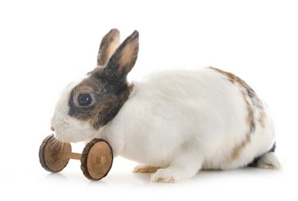

Králíci jsou povahově velmi různorodá zvířátka
Proto je důležité naučit se s ním komunikovat a eozpoznávat jeho nálady a potřeby. Pojďme se na to vše podívat z pohledu odborníků z naší stanice
Králíci mohou být jak velice aktivní, tak i lenivý. Je to jako s námi. Občas mají náladu skákat, běhat, hrát si a někdy zase mají náladu akorát tak na to hodit bokem. Záleží zrovna, jak se mají
Co se týče spánku, králíci mají střídavý spánek. To znamená, že chvíli spí a chvíli jsou bdělí. Někteří králíci naspí více. Naopak někteří většinu času bdí.
Pokud chováte více králíků, je dobré se nejdřív ujistit, že si navzájem sedí. Většinou se ale nemusí dva samci či samice, ze kterých minimálně jeden je nekastrovaný. V ostatních případech je běžnější, že si sednou. Toto je však velice individuální
Králíkům se zlepšuje psychika a jsou šťastnější, když mají u sebe králíka nebo králíky, kteří mu sedí. Pokud jde o samce a samici, očekávají se později také králíčci
Králíci si s dětmi velice rozumí. Je ale důležité je přitom hlídat. Malé děti ještě nechápou, že některé věci dělat nemohou a mohou potenciálně králíkovi nechtěně ublížit. Naopak králík nechápe některé věci ze strany dítěte a také mu může potenciálně ublížit
Když je dítě a králík pod dohledem, není nic špatného na tom, když si spolu hrají. Podstatná je tolerance z obou stran a zajišťování bezpečnosti. Samotné dítě by však nemělo samo chovat králíka, dokud není dostatečně zralé na takovýto závazek
Začátečníci mají často tendenci zmatkovat. Králík potřebuje chovatele, který mu bude rozumět a postará se o něj i při potížích. Proto začátečníkům doporučujeme náš rychlokurz domácího chovu, který začátečníky naučí, co a jak za daných situací
Králíci jsou lehce nároční na jejich péči. Tolerují kde co, ale čeho je moc, toho je příliž. Králíci mají rádi chutnou stravu, kvalitní srst, pohodlné a příjemné prostředí a když mají možnost si nastavit svůj vlastní režim. Samozřejmě je ale ochoten se přizpůsobit Vašim možnostem a např. krmení očekává pokaždé v tu samou hodinu dne
Začneme rovnou tam, kde jsme skončili. Králík je už od přírody zvyklý nastavovat si režim tak, jak je mu umožněno. Jakmile si režim nastaví, pevně ho dodržuje. Když něco není dle režimu, králík může být rozrušený, rozhněvaný či smutný. Proto je dobré si hlídat např. již zmíněné časy krmení, doplňování a výměny vody, kydání jeho teritoria či česání
Když kupujete králíkovi krmení, volte takové, na jaké je zvyklý. Vždy kupujte kvalitní seno a k tomu granule dle králíkova výběru. Ať má vždy dostatek čisté vody. Snažte se nezapomínat na pravidelné krmení, protože by to mohlo králíka rozhodit a přestat jíst úplně
Každý králík ocení kvalitní opečovávanou srst, která mu zajistí dobrou termoregulaci. Proto je důležité mu ji pravidelně česat. Na kratší srst používejte vyčesávací hřeben. Na dlouho vyčesávací kartáč. Nejen že takto králíkovi pročesáte srst najemno, ale zároveň vyčesáte všechny vypelichané chlupy
Králíka je velmi obtížné vycvičit. Stejně, jako kočky, mají vlastní hlavu. Jejich mysl lze ale stimulovat jinými způsoby. Tvořte mu různé atrakce, hrajte si s ním, mazlete se, hoňte ho na zahradě či po domě atd.